Remotes
Commands

Point your remote at the board and press any key.
Open Controls in the header to pick a channel, a filter and a gesture for each of the four actions. The bar beside each one shows its live level, and the slider sets the threshold that counts as a gesture: put it just above your resting level and below a deliberate one.
Web Bluetooth works in Chrome and Edge on desktop and Android. Firefox and Safari do not support it. On Android, Location must be on for Bluetooth scanning.
Removes every remote, command and waveform from the board. This cannot be undone.